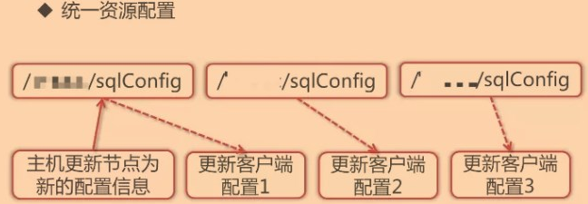

ZooKeeper–学习笔记(包含ZooKeeper视频)
Lesson1 ZooKeeper概述
NO1.1 ZooKeeper简介
如果你没有学习过Spring Cloud的话，那么就简单的理解为ZooKeeper是一个服务注册中心，类似于我们生活中的工商注册中心。
- ZooKeeper
- 介绍：ZooKeeper是一个分布式的，开放源码的分布式应用程序协调服务，是Google的Chubby一个开源的实现，是Hadoop和Hbase的重要组件；它是一个为分布式应用提供一致性服务的软件，提供的功能包括：配置维护、域名服务、分布式同步、组服务等；
- 目标：ZooKeeper的目标就是封装好复杂易出错的关键服务，将简单易用的接口和性能高效、功能稳定的系统提供给用户；
- 优点：
- 作为一个中间件，提供协调服务；
- 支持Java 和 C语言；
- 作用于分布式系统，发挥其优势，可为大数据服务等等；
- 特点：
- 一致性：数据一致性，数据按顺序分批入库；
- 原子性：事务要么都成功，要么都失败，不会局部化；
- 单一视图：客户端连接集群中的任一zk节点，数据都是一致的；
- 可靠性：每次对zk的操作状态都保存在服务器中；
- 实时性：客户端可以读取zk服务端的最新数据；
- 基本数据模型：
- ZooKeeper的数据模型是一个树形结构；
- 每一个节点都称之为
Znode；节点分为两种，即临时节点和永久节点； - 每个Znode节点都有各自的版本号；每当节点数据发生变化，那么该节点的版本号会累加；
- 每个节点存储的数据不宜过大，默认存储1MB数据；
- 节点可以设置权限acl，可以通过权限来限制用户访问；
- 应用：
- master节点选举：主节点挂了以后，从节点就会接手工作，并且保证这个节点是唯一的，这也是所谓的首脑模式，从而保证我们的集群是高可用的；
- 统一配置文件管理：即只需要部署一台服务器，则可以把相同的配置文件同步更新到其他所有服务器，该操作在云计算中应用广泛；
- 发布与订阅：类似消息队列MQ，Dubbo发布者把数据存在Znode上，订阅者会读取这个数据；
- 提供分布式锁：分布式环境中不同进程之间争夺资源，类似于多线程的锁；
- 集群管理：集群中保证数据的强一致性；
分布式系统理解：通俗易懂的讲，就是一个大系统拆分成多个小系统分散到不同的设备上。
NO1.2 ZooKeeper安装与配置
zk的安装和配置都比较简单。
安装与配置：
Windows：
到官网下载自己想要下载的zk版本即可；
下载完成后，然后解压zk安装包；
找到解压目录中的conf目录，并在conf目录中找到zoo_sample.cfg配置文件，重命名为zoo.cfg；
进入zoo.cfg文件，简单配置数据文件目录和日志文件目录：即自定义设置数据文件目录和日志文件目录；
到此zk的安装和简单的就配置完成，可以启动了，但是前提是必须安装了JDK，因为zk是建立在Java平台上的；
使用命令行，进入zk安装目录中的bin目录，找到zkServer.cmd并运行即可。
Linux：
- 到官网下载自己想要下载的zk版本即可，但要注意Linux版本的安装包最好为tar.gz后缀的安装包；
- 下载完成后，上传到Linux中，解压zk安装包；
- 找到解压目录中的conf目录，并在conf目录中找到zoo_sample.cfg配置文件，重命名为zoo.cfg；
- 进入zoo.cfg文件，简单配置数据文件目录和日志文件目录：即自定义设置数据文件目录和日志文件目录；
- zk的安装和简单的配置就基本完成了，进入zk的安装目录，再进入bin目录，输入：
./zkServer start命令启动zk即可。
- zoo.cfg配置内容：
tickTime：用于计算的时间单元；initLimit：用于集群，允许从节点连接并同步到master节点的初始化连接时间，以tickTime 的倍数来表示；syncLimit：用于集群，master主节点与 从节点之间发送消息，请求和应答时间长度(心跳机制)；dataDir：存放数据文件目录，必须配置；dataLogDir：日志目录；clientPort：连接服务器的端口，默认2181；
Lesson2 ZooKeeper基础
NO2.1 ZooKeeper命令
因为zk是建立在JDK之上的，所以我们常用Java中的命令来操作zk。
ZooKeeper的常用命令行操作：
Linux的zk客户端命令行；
//stat命令用于查看节点的状态信息 stat path [watch] //set命令用于设置节点的数据(修改节点) set path data [version] //ls命令用于获取路径下的节点信息，注意路径为绝对路径 ls path [watch] //delquota命令用于删除配额，-n为子节点个数，-b为节点数据长度 delquota [-n|-b] path //ls2命令是ls命令的增强版，比ls命令多输出本节点信息 ls2 path [watch] //用于设置节点Acl，Acl由三部分构成：1为scheme，2为user，3为permission，一般情况下表示为scheme:id:permissions(设置权限) setAcl path acl //setquota命令用于设置节点个数以及数据长度的配额 setquota -n|-b val path //history用于列出最近的命令历史，可以和redo配合使用 history //redo命令用于再次执行某个命令 redo cmdno //printWatchers命令用于设置和显示监视状态，值为on或则off printwatches on|off //delete命令用于删除节点，如delete /nodeDelete ；(删除节点) delete path [version] //sync命令用于强制同步，由于请求在半数以上的zk server上生效就表示此请求生效，那么就会有一些zk server上的数据是旧的。sync命令就是强制同步所有的更新操作 sync path //查看指定znode的配额 listquota path //递归删除 rmr path //查询节点：用于获取节点的信息，注意节点的路径必须是以/开头的绝对路径。如，get / get path [watch] //创建节点：create命令用于创建节点，其中-s为顺序充点，-e临时节点 create [-s] [-e] path data acl //用于节点认证，使用方式：如，addauth digest username:password addauth scheme auth //退出客户端 quit //查看某个节点的权限：用于获取节点的Acl，如，getAcl /node1 getAcl path //断开服务器连接：用于关闭与服务端的链接 close //连接服务器：用于连接zk服务端，与close命令配合使用可以连接或者断开zk服务端 connect host:port
返回信息的具体含义：
//节点创建时的zxid cZxid = 0x0 //节点创建时间 ctime = Thu Jan 01 08:00:00 CST 1970 mZxid = 0x0 //节点最近一次更新时的zxid //节点最近一次更新的时间 mtime = Thu Jan 01 08:00:00 CST 1970 //子节点的id pZxid = 0x2c //子节点数据更新次数 cversion = 10 //本节点数据更新次数 dataVersion = 0 //节点ACL(授权信息)的更新次数 aclVersion = 0 //如果该节点为临时节点,ephemeralOwner值表示与该节点绑定的session id；如果该节点不是临时节点,ephemeralOwner值为0 ephemeralOwner = 0x0 //节点数据长度，本例中为hello world的长度 dataLength = 0 //子节点个数 numChildren = 10
NO2.2 session的基本原理
- 基本原理：
- 客户端与服务端之间的连接存在会话；
- 每个会话都可以设置一个超时时间；
- 心跳结束，session则过期；
- session过期，则临时节点znode则会被抛弃；
- 心跳机制：客户端向服务端的ping包请求；
NO2.3 watcher机制
- watcher机制：
- 针对每个节点的操作，都会有一个监督者->wathcer ；
- 当监控的某个对象(Znode)发生了变化。则触发wathcer事件；
- zk中的wathcer是一次性的，触发后立即销毁；
- 父节点、子节点 增删改查都能够触发其wathcer ；
- 针对不同类型的操作，触发的wathcer事件是不同的；子节点的创建事件，子节点的删除事件，子节点数据变化事件；
- ls 为父节点设置watcher，创建子节点后触发：NodeChildChanged
- ls 为父节点设置watcher，删除子节点后触发：NodeChildChanged
- ls 为父节点设置watcher，修改子节点后不触发事件
- 如果只对父节点添加watcher，子节点的增删只会触发NodeChildChanged这一个事件，且修改子节点，不会触发watcher；如果想让子节点跟父节点一样，根据不同的操作，触发的watcher事件也不相同，那么只需要对应的在具体的子节点设置watcher即可，即把子节点当成父节点；
watch的使用场景：统一资源配置；

NO2.4 ACL权限控制
- ACL(access control lists)权限控制：
- 针对节点可以设置相关的读写等权限，目的为了保证数据安全性；
- 权限permissions可以指定不同的权限范围以及角色；
- zk的acl通过[scheme:id:permissions]来构成权限列表；
scheme：代表采用的某种权限机制(4种常用，1种不常用)；world：world下只有一个id，即只有一个用户，也就是anyone，那么组合的写法就是world:anyone:[permissions]；auth：代表认证登录，需要注册用户addauth后才能操作，形式为auth:user:password:[permissions]；digest：需要对密码加密才能访问，组合形式为digest:username:BASE64(SHA1(password)):[permissions]；- auth/digest的区别：
- 前者明文，后者密文；
setAcl /path auth:lee:lee:cdrwa与setAcl /path digest:lee:BASE64(SHA1(password)):cdrwa是等价的，在通过addauth digest lee:lee注册后都能操作指定节点的权限；
- auth/digest的区别：
ip：当设置为ip属性指定的ip地址，此时限制ip进行访问。如，ip:192.168.1.12:[permissions] ；- super：超级管理员，拥有所有的权限；首先只需要修改zkServer.sh增加super管理员；、重启 zkServer.sh；
id: 代表允许访问的用户(与scheme绑定一起使用的)；permissions：即权限组合字符串；权限字符串包括crdwa：CREATE：创建子节点；READ：获取节点/子节点；WRITE：设置节点数据；DELETE：删除子节点；ADMIN：设置权限；
- ACL的常用使用场景；
- 开发/测试环境分离，开发者无权操作测试库的节点，只能看；
- 生产环境上的控制指定ip的服务可以访问相关节点，防止混乱；
NO2.5 zk的四字命令与集群搭建
ZooKeeper的四字命令；
ZooKeeper可以通过它自身提供的简写命令来和服务器进行交互；
需要使用nc命令，安装：
yum install nc；echo [command] | nc [ip] [port] ；
常用四字命令；
- ZooKeeper集群搭建；
- ZooKeeper伪集群搭建；
- ZooKeeper真实环境集群搭建；
- 需要注意：环境变量的配置，ip配置的不同，端口号可以相同；
NO2.6 zk的原生Java API使用
会话连接与恢复；
//使用Java创建ZooKeeper连接 public class ZKConnection implements Watcher { //想要连接的zk服务器ip地址和端口 public static final String zkServerPath = "127.0.0.1:2181"; //如果要连接集群 //public static final String zkServerPath ="127.0.0.1:2181,127.0.0.2:2182"; public static final Integer timeout = 5000; /** * 当客户端连接服务器成功后，会收到一个watch */ @Override public void process(WatchedEvent event) { System.out.println("收到来自zk的watch的通知啦"); } } //------------------------------------------------ //打开ZK服务器，测试连接 public class Test { public static void main(String[] args) throws IOException, InterruptedException { ZooKeeper zk = new ZooKeeper(ZKConnection.zkServerPath, ZKConnection.timeout, new ZKConnection()); //用于会话重新连接时使用，拿到本次会话的sessionId和sessionPasswd，下一次想要再连接到本次会话，只需在构造方法中添加这两个参数即可 //long sessionId = zk.getSessionId(); //byte[] sessionPasswd = zk.getSessionPasswd(); for(int i =0;i<10;i++) { Thread.sleep(10); System.out.println(i+"-------"+zk.getState()); } } } 说明： 一、客户端和zk服务端的连接是一个异步的过程； 二、当连接成功后，客户端会收到一个watch通知； 三、构造方法的参数介绍： ZooKeeper(String connectString,int sessionTimeout, Watcher watcher,long sessionId, byte[] sessionPasswd, boolean canBeReadOnly) 1.connectString：连接服务器的ip字符串,可以是一个ip，也可以是多个ip，一个ip代表单机，多个ip代表集群，如："192.168.1.1:2181,192.168.1.2:2181,192.168.1.3:2181" 2.sessionTimeout：超时时间，心跳收不到了，那就超时 3.watcher：通知事件，如果有对应的事件触发，则会收到一个通知：如果不需要，那就设为null 4.sessionId：会话的id 5.sessionPasswd：会话密码，当会话丢失后，可以依据sessionId和sessionPasswd重新获取会话 6.canBeReadOnly：可读，当这个物理机节点断开后，还是可以读到数据的，只是不能写,此时数据被读取到的可能是旧数据，一般设置为false，不推荐使用如果想要创建临时节点，则只需调用不同的构造方法即可； 如果创建永久节点，则需要额外创建一个回调函数类；
//回调函数类，用于创建永久节点用 public class CreateNodeCallBack implements StringCallback{ @Override public void processResult(int rc, String path, Object ctx, String name) { System.out.println("创建节点：" + path); System.out.println((String)ctx); } } //--------------------------------------- //测试创建节点 public class Test { public static void main(String[] args) throws Exception { ZooKeeper zk = new ZooKeeper( ZKConnection.zkServerPath, ZKConnection.timeout, new ZKConnection()); String ctx= "{'create':'success'}"; //调用同步方法：viod create(String path,byte[] data,List<Acl> acl,CreateMode createMode); //调用异步方法：viod create(String path,byte[] data,List<ACL> acl,CreateMode createMode,StringCallback cb,Object ctx); //异步创建节点 zk.create("/dyf/baidu", "baidu".getBytes(), Ids.OPEN_ACL_UNSAFE, CreateMode.PERSISTENT, new CreateNodeCallBack(), ctx); System.out.println("永久节点创建成功啦"); new Thread().sleep(2000); } } 说明： 一、String create(String path, byte[] data, List<ACL> acl,CreateMode createMode)；注意：同步或异步创建节点，都不支持子节点的递归操作，异步有一个callBack方法。 二、参数解析： 1.path：创建的路径 2.data：存储的数据,byte[]类型 3.acl：权限控制策略 Ids.OPEN_ACL_UNSAFE ---> world:anyone:crdwa CREATE_ALL_ACL ---> auth:user:password:cdrwa 4.createMode：节点类型，是一个枚举 CreateMode.PERSISTENT： 持久节点 CreateMode.PERSISTENT_SEQUENTIAL：持久顺序节点 CreateMode.EPHEMERAL： 临时节点 CreateMode.EPHEMERAL_SEQUENTIAL： 临时顺序节点
节点的删改查；
//修改节点 public class Test { public static void main(String[] args) throws Exception { ZooKeeper zk = new ZooKeeper( ZKConnection.zkServerPath, ZKConnection.timeout, new ZKConnection()); /** * path：节点路径 * data：修改后的数据 * version:版本号，这里的版本号必须是正要修改的节点数据的版本号！！ */ //使用同步方法：Stat setData(String path, byte[] data, int version) //使用异步方法：setData(String path, byte[] data, int version, StatCallback cb, String ctx); //同步修改节点 Stat stat = zk.setData("/dyf/baidu", "baidupan".getBytes(), 0); System.out.println("修改后的数据版本号为："+stat.getVersion()); } } //================================================= //删除节点 //编写一个类，继承VoidCallback，因为删除节点后会异步回调该类下的方法processResult public class deleteNodeCallBack implements VoidCallback{ @Override public void processResult(int rc, String path, Object ctx) { System.out.println("删除节点：" + path); System.out.println((String)ctx); } } //--------------------------------------- //测试删除节点 public class Test { public static void main(String[] args) throws Exception { ZooKeeper zk = new ZooKeeper( ZKConnection.zkServerPath, ZKConnection.timeout, new ZKConnection()); /** * 删除节点 * 注意：version版本号必须和要删除的节点数据的版本号一致 */ //调用同步方法：void delete(String path, int version); //调用异步方法：void delete(String path, int version, VoidCallback cb,Object obj) //异步删除节点 String ctx = "{'delete':'success'}"; zk.delete("/dyf/baidu", 0,new deleteNodeCallBack(),ctx); new Thread().sleep(2000); } } //================================================= //查询节点数据、查询子节点、判断节点是否存在 public class ZkConnection implements Watcher{ public static final String zkServerPath = "127.0.0.1:2181"; public static final Integer timeout = 5000; //创建CountDownLatch，设置等待一个线程完成后，就闭锁 private static CountDownLatch latch = new CountDownLatch(1); @Override public void process(WatchedEvent watchedEvent) { System.err.println("收到zk的watch通知----" ); //闭锁需要等待的线程数-1 latch.countDown(); } //------------------------------------------- public static void main(String[] args) throws Exception{ ZooKeeper zk = new ZooKeeper( zkServerPath,timeout, new ZkConnection()); //调用同步方法：byte[] getData(String path, boolean watch, Stat stat) 等参数依次分别为：节点路径、是否需要注册一个watch、节点的状态信息对象 //调用异步方法：void getData(String path, Watcher watcher, DataCallback cb, Object ctx)等参数依次分别为：节点路径、是否需要注册一个watch、回调的函数、以及用于传递上下文信息的对象 //查询节点数据 Stat stat = new Stat(); byte[] data = zk.getData("/dyf/tengxun", true, stat); latch.await(); System.out.println(new String(data)); //--------------------------------------- //调用同步方法：List<String> getChildren(String path, boolean watcher)等 //调用异步方法：void getChildren(String path, Watcher watcher,ChildrenCallback cb, Object ctx)等 //查询子节点 List<String> children = zk.getChildren("/dyf", true); for (String string : children) { System.out.println(string); } //--------------------------------------------------- //调用同步方法：exists(String path,boolean watch) //调用异步方法：exists(String path, boolean watch,StatCallback cb,Object ctx); //查询节点是否为空 Stat exists = zk.exists("/dyf/tengxun", true); if(exists != null) { System.out.println("节点版本号："+exists.getVersion()); }else { System.out.println("节点为空"); } } } //================================================= //---------------------------------------
Watch与Acl的相关操作；
//设置权限(auth(不常用)、digest(常用)、ip) public class Test { public static void main(String[] args) throws Exception { //创建ZooKeeper连接 ZooKeeper zk = new ZooKeeper( ZKConnection.zkServerPath, ZKConnection.timeout, new ZKConnection()); //用具体用户auth或digest登录方式设置权限 String ctx= "{'create':'success'}"; //设置权限acls List<ACL> acls = new ArrayList<ACL>(); //使用指定的用户以密文方式登陆ZooKeeper Id user = new Id("digest", DigestAuthenticationProvider.generateDigest("账号:密码")); //创建指定的用户拥有的使用节点权限，前者是权限的种类，后者是指定的用户 acls.add(new ACL(Perms.ALL,user)); //创建节点(已经设置：指定的用户，以及指定用户所拥有的权限) zk.create("/dyf/baidu", "baidu".getBytes(), acls, CreateMode.PERSISTENT,new CreateNodeCallBack(),ctx); System.out.println("节点创建成功啦"); //--------------------------------------------- //用IP方式设置权限 String ctx= "{'create':'success'}"; //设置权限acls List<ACL> acls = new ArrayList<ACL>(); //使用指定的用户以密文方式登陆ZooKeeper Id user = new Id("ip","具体的ip地址"); //创建指定的ip拥有的使用节点权限，前者是权限的种类，后者是指定的ip acls.add(new ACL(Perms.ALL,user)); //创建节点(已经设置：指定的用户，以及指定用户所拥有的权限) zk.create("/dyf/baidu", "baidu".getBytes(), acls, CreateMode.PERSISTENT,new CreateNodeCallBack(),ctx); System.out.println("节点创建成功啦"); } }
NO2.7 CountDownLatch优化连接zk
使用CountDownLatch优化连接ZooKeeper：
public class ZkConnection implements Watcher{ public static final String zkServerPath = "127.0.0.1:2181"; public static final Integer timeout = 5000; //创建CountDownLatch，设置等待一个线程完成后，就闭锁 private static CountDownLatch latch = new CountDownLatch(1); @Override public void process(WatchedEvent watchedEvent) { System.err.println("收到zk的watch通知----" ); //闭锁需要等待的线程数-1 latch.countDown(); } //--------------------------------------- public static void main(String[] args) throws Exception{ ZooKeeper zk = new ZooKeeper( zkServerPath,timeout, new ZkConnect()); System.out.println("连接状态---" + zk.getState()); latch.await(); System.out.println("连接状态---" + zk.getState()); } }
- CountDownLatch工作原理：
- 构造器中的计数值(count)实际上就是闭锁需要等待的线程数量；这个值只能被设置一次，而且CountDownLatch没有提供任何机制去重新设置这个计数值；与CountDownLatch的第一次交互是主线程等待其他线程；主线程必须在启动其 他线程后立即调用CountDownLatch.await()方法；这样主线程的操作就会在这个方法上阻塞，直到其他线程完成各自的任务；其他N个线程必须引用闭锁对象，因为他们需要通知CountDownLatch对象，他们已经完成了各自的任务。这种通知机制是通过CountDownLatch.countDown()方法来完成的；每调用一次这个方法，在构造函数中初始化的count值就减1。所以当N个线程都调用了这个方法，count的值等于0，然后主线程就能通过await()方法，恢复执行自己的任务。
NO2.7 Curator客户端
- 常用的ZooKeeper的Java客户端；除了原生的ZooKeeper的API，常用的就是Apache curator； 但是原生的API不足之处有以下几点：
- 超时重连，不支持自动，需要手动操作；
- Watch注册一次后失效；
- 不支持递归创建节点。
基本步骤：
//使用Curator创建ZooKeeper的连接 public class CuratorOperator { public CuratorFramework client = null; public static final String zkServerPath = "127.0.0.1:2181"; public CuratorOperator() { /** * ExponentialBackoffRetry重试策略，该构造有三个参数，推荐使用： * baseSleepTimeMs：初始sleep的时间 * maxRetries：最大重试次数 * maxSleepMs：最大重试时间 */ //RetryPolicy rp = new ExponentialBackoffRetry(1000,5); /** * RetryNTimes重试策略，该方法有两个参数，推荐使用： * n：重试的次数 * sleepMsBetweenRetries：每次重试间隔的时间 */ RetryPolicy rp = new RetryNTimes(5, 3000); /** * RetryOneTime策略，只重试1次，不推荐： * sleepMsBetweenRetry：重试间隔的时间 * */ //RetryPolicy rp = new RetryOneTime(3000); /** * RetryForever策略，永远重试，不推荐： * retryIntervalMs：重试间隔的时间 * */ //RetryPolicy rp = new RetryForever(3000); /** * RetryUtilElapsed策略，不推荐： * maxElapsedTimeMs：最大重试时间 * sleepMsBetweenRetries：每次重试间隔时间 * 当重试时间超过最大重试时间，就不再重试 */ //RetryPolicy rp = new RetryUtilElapsed(2000,3000); //创建连接 client = CuratorFrameworkFactory.builder() .connectString(zkServerPath) .sessionTimeoutMs(10000).retryPolicy(rp) .build(); //开启连接 client.start(); } //关闭客户端 public void choseClient() { if(client != null) { this.client.close(); } } } //---------------------------------------- //测试连接Zookeeper，打开ZK服务端，并测试 public class Test { public static void main(String[] args) throws InterruptedException { //实例化 CuratorOperator co = new CuratorOperator(); //获取连接状态，并输出结果 boolean flag = co.client.isStarted(); System.out.println("客户端状态："+(flag?"连接中":"已关闭")); //模拟我们认为的操作，让线程休息几秒 Thread.sleep(3000); //操作完成，关闭连接 co.choseClient(); //再次获取连接状态，并输出结果 boolean flag2 = co.client.isStarted(); System.out.println("客户端状态："+(flag2?"连接中":"已关闭")); } }
使用Curator创建节点、删除节点、查询节点、修改节点操作；
public class CuratorOperator { public CuratorFramework client = null; public static final String zkServerPath = "127.0.0.1:2181"; public CuratorOperator() { /** * RetryNTimes重试策略，该方法有两个参数，推荐使用： * n：重试的次数 * sleepMsBetweenRetries：每次重试间隔的时间 */ RetryPolicy rp = new RetryNTimes(5, 3000); //创建连接的时候，顺便创建一个工作空间，增删改查的操作都在这里面进行 //如果工作空间节点存在，则不创建，否则在根节点下创建工作空间节点 client = CuratorFrameworkFactory.builder() .connectString(zkServerPath) .sessionTimeoutMs(10000).retryPolicy(rp) .namespace("workspace").build(); //开启连接 client.start(); } //关闭客户端 public void choseClient() { if(client != null) { this.client.close(); } } } 测试创建、删除、修改、查询节点操作； public class Test { public static void main(String[] args) throws InterruptedException { //实例化 CuratorOperator co = new CuratorOperator(); //获取连接状态，并输出结果 boolean flag = co.client.isStarted(); System.out.println("客户端状态："+(flag?"连接中":"已关闭")); //------------------------------------------------- //创建节点 String nodePath = "/dyf/alibaba"; byte[] data = "taobao".getBytes(); //路径中如果没有父节点则创建 co.client.create().creatingParentsIfNeeded() .withMode(CreateMode.PERSISTENT) .withACL(Ids.OPEN_ACL_UNSAFE) .forPath(nodePath, data); //------------------------------------------------- //修改节点 byte[] newData = "tianmao".getBytes(); co.client.setData() .withVersion(0) .forPath(nodePath, newData); //------------------------------------------------- //删除节点 co.client.delete() .guaranteed() //如果删除失败，那么在后端还是会继续删除，直到成功 .deletingChildrenIfNeeded() //如果有子节点，就删除 .withVersion(1) .forPath(nodePath); //------------------------------------------------- //查询节点数据 Stat stat = new Stat(); byte[] res = co.client.getData() .storingStatIn(stat) //将查询到的节点数据都封装到stat对象里 .forPath(nodePath); System.out.println(new String(res)); //输出结果 //------------------------------------------------- //获取子节点 List<String> res = co.client.getChildren() .forPath(nodePath); for (String string : res) { System.out.println(string); } //------------------------------------------------- //判断节点是否存在 Stat res = co.client.checkExists().forPath(nodePath); System.out.println(res==null?"节点是空的":"节点是存在的"); //------------------------------------------------- //模拟我们认为的操作，让线程休息几秒 Thread.sleep(3000); //操作完成，关闭连接 co.choseClient(); //再次获取连接状态，并输出结果 boolean flag2 = co.client.isStarted(); System.out.println("客户端状态："+(flag2?"连接中":"已关闭")); } }
使用Curator设置Watcher监听事件；
//首先，创建监听类 //一次性的监听Watcher public class MyCuratorWatcher implements CuratorWatcher { public void process(WatchedEvent event) throws Exception { System.out.println("该路径下的节点的数据已变更"+event.getPath()); } } //永久性的监听Watcher public class MyNodeCacheListener implements NodeCacheListener { public void nodeChanged() throws Exception { System.out.println("节点数据已发生变化"); } } //测试 public class Test { public static void main(String[] args) throws InterruptedException { //实例化对象，创建连接 CuratorOperator co = new CuratorOperator(); //获取连接状态，并输出结果 boolean flag = co.client.isStarted(); System.out.println("客户端状态："+(flag?"连接中":"已关闭")); //------------------------------------------------- //使用Watcher，但是只能监听一次 co.client.getData() .usingWatcher(new MyCuratorWatcher()) .forPath(nodePath); //------------------------------------------------- //使用一个能够永久性监听节点的watcher NodeCache nodeCache = new NodeCache(co.client, nodePath); nodeCache.start(true); if(nodeCache.getCurrentData() != null) { System.out.println("获取的数据为："+ new String(nodeCache.getCurrentData().getData())); }else { System.out.println("节点中没有数据哦"); } nodeCache.getListenable().addListener(new MyNodeCacheListener()); //------------------------------------------------- //PathChildrenCache：监听数据节点的增删改，会触发事件 //第三个参数：如果设置true，是否需要缓存数据 final PathChildrenCache pcc = new PathChildrenCache(co.client, nodePath,true); /** * StartMode.POST_INITIALIZED_EVENT：异步初始化，初始化后会触发事件 PathChildrenCacheEvent.Type.INITIALIZED * NORMAL：异步初始化，初始化后不会触发事件 * BUILD_INITIAL_CACHE：同步初始化 * */ pcc.start(StartMode.BUILD_INITIAL_CACHE); Thread.sleep(2000); System.out.println("获取数据"); List<ChildData> cdl = pcc.getCurrentData(); for (ChildData cd : cdl) { System.out.println(new String(cd.getData())); } //------------------------------------------------- //模拟我们认为的操作，让线程休息几秒 Thread.sleep(100000); //操作完成，关闭连接 co.choseClient(); //再次获取连接状态，并输出结果 boolean flag2 = co.client.isStarted(); System.out.println("客户端状态："+(flag2?"连接中":"已关闭")); } } 注意：如果指定的监听节点不存在的话，会自动的创建该节点；如果在start之后立马调用getCurrentData()的话是会得到null的，因为此时还没有缓存好内容，如果等待一会再调用getCurrentData()的话就能够得到数据；如果是POST_INITIALIZED_EVENT模式启动的话，在回调函数中使用PathChildrenCacheEvent.getData()的时候会得到null对象，如果对null调 用其他方法比如getPath，但是此时并不会出现异常(抛出了异常，但是控制台不会显示)，而是下面的内容均不会输出；
本博客所有文章除特别声明外，均采用 CC BY-SA 4.0 协议 ，转载请注明出处！